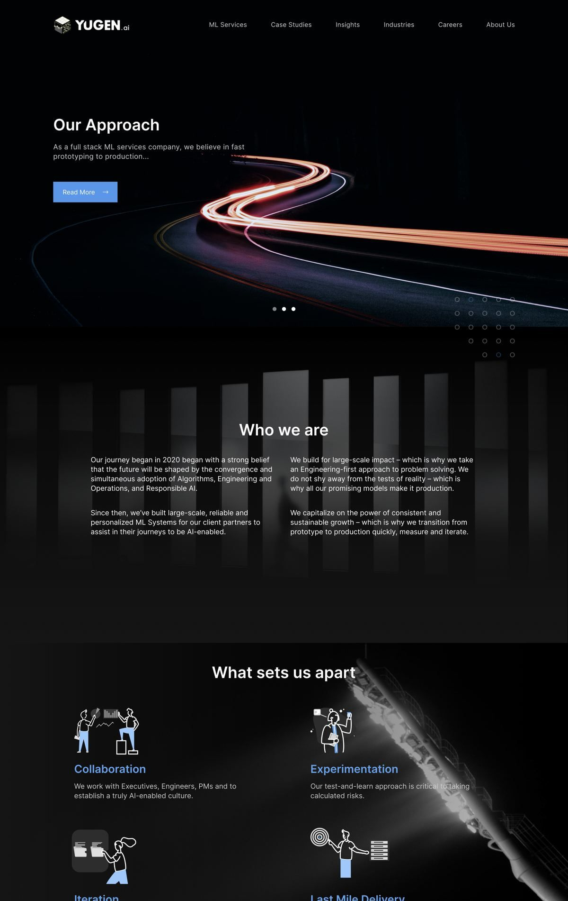
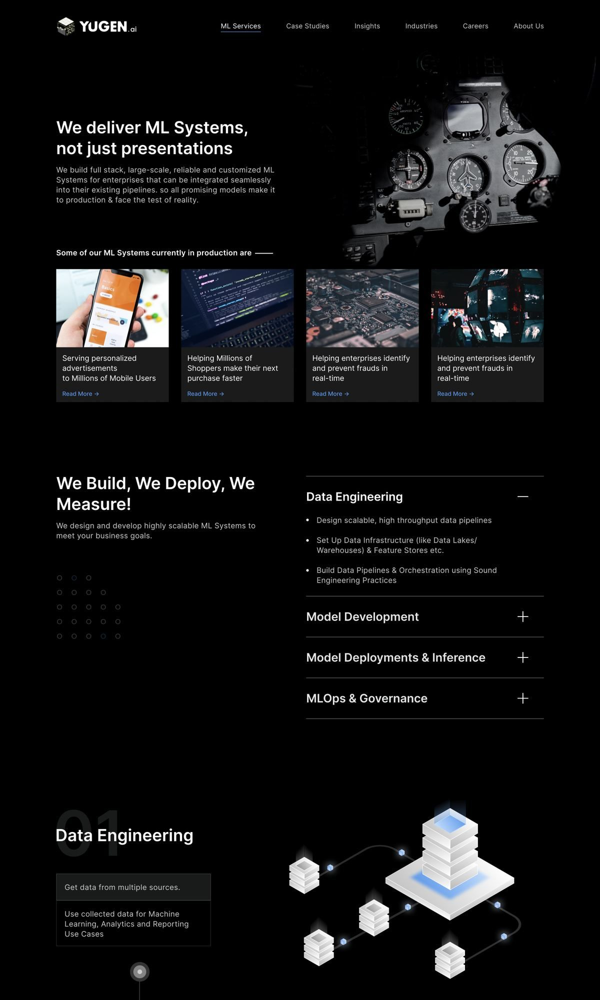
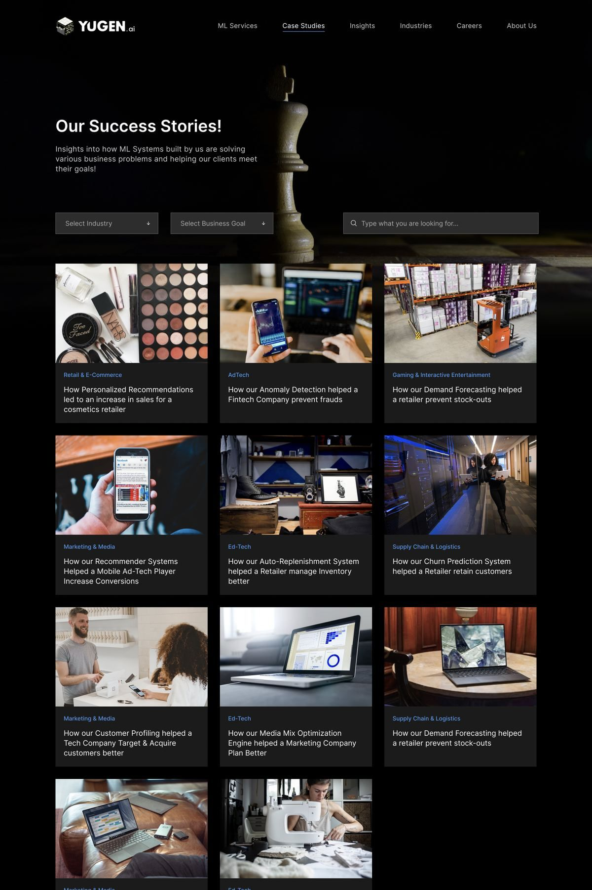
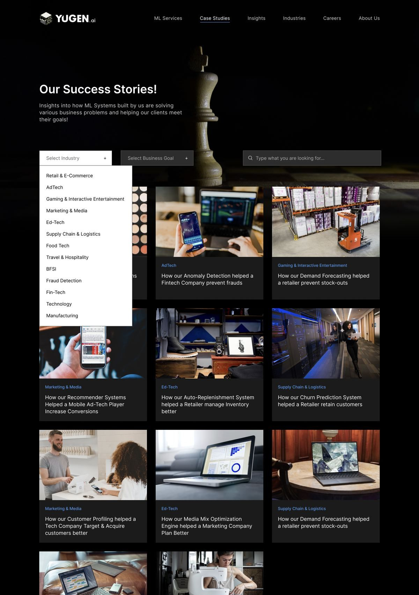
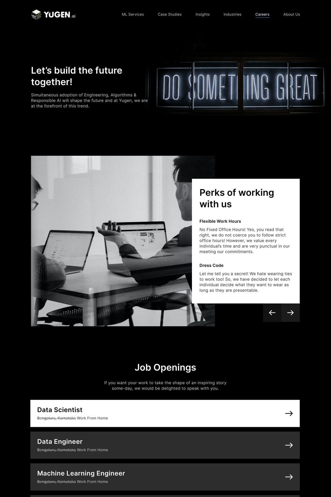

Yugen
I built a brand identity and website around the work Yugen could show enterprise buyers.
- Role
- Brand & Web Designer
- Platform
- Identity + website
- Year
- 2024
The challenge
Yugen needed an identity and website that could explain its machine-learning services to enterprise buyers.
Outcome
A consistent brand and website bring together the company’s services, case studies, and careers content.

The Approach
Find a distinctive direction
Working with the founding team, I developed an identity that reflects the company’s technical depth without relying on familiar AI imagery.
Make complex work tangible
The visual language uses typography, colour, and illustration to explain machine-learning services consistently across the site.
Lead visitors to evidence
The website connects the company’s positioning to its services and case studies, helping potential clients find work relevant to their needs.
The Key Decision
The brand needed to communicate technical expertise clearly across more than a logo.
I built a visual system around a clear website structure, with services and case studies as proof of the work.
The same visual language carries across the company’s pages.

The Solution
Explain the offer
Service pages make the company’s machine-learning work easier to understand.
Make proof easy to find
Case studies can be explored by industry and business goal.
Support the team
A consistent design system extends from case studies to careers.


